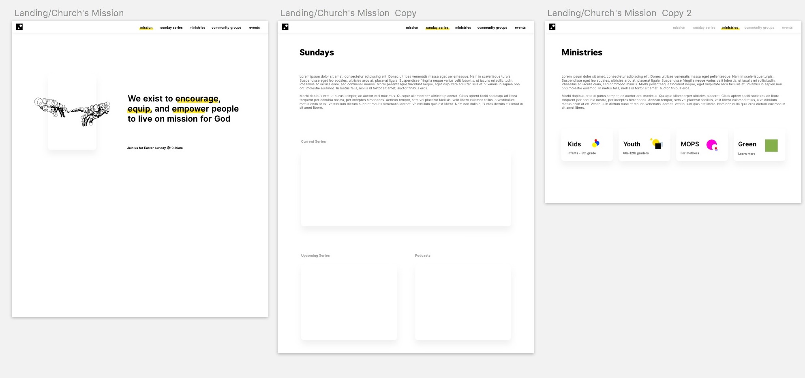

CLC Rebrand and Website Redesign
Time frame: Spring Break 2018
Practicing: Self-initiating and driving client project, assessibility UX/UI, and logo branding.
Learning: HTML/CSS and other foundamental front-end tools.
Tools: Pen, Paper, Sketch
Resources: DevTips (Youtube Channel), Web Development 101 (Odin Project)

CLC Rebrand and Website Redesign
This is a church that I've been attending here in Santa Cruz for the past 1.5 years. The church is made up of predominantly older folks before a flock of college students from various campus fellowships started joining in. Maybe it's the free pastries and expresso bar that make the college kids want to come back each Sunday. Maybe it's the heartfelt warmth and hospitality that the church givs off. Or maybe, it's just Pastor Ryan's raw sermons? This is where I'm going to write the background and how I am planning on tackling the project.
Challenge
I only have about a week to design and build the website from scratch - as we're aiming to have it revealed on Easter Sunday. Designing the high-fidelity in Sketch is not the hard part. The hard part is designing with the notion that I'm going to the one who's going to writing the CSS style guide myself. Why am I doing this instead of using a CSS library or using a front-end framework (Bootstrap/Foundation)? Because I want to challenge myself and learn how to write basic HTML/CSS code from scratch instead of just fidgting/copy/pasting code in a text editor like how I always use to do before.
Currently, I'km going through Dev Tip's CSS videos and supplementing my learnings with the Web Development 101 course on the Odin Project, which more than two of my CS friends have recommended.
Problem
- Vision
I'm not quite sure what the church's mission is but I'm sure the pastor is working on curating the contetent right now!
- Assesibility
Currently, the website is barely accessible. There's a lack of content and I'm sure it's incredibly difficult for anyone to find helpful information.
Process
Link to Midium article...I believe process should be widely shared and not hidden